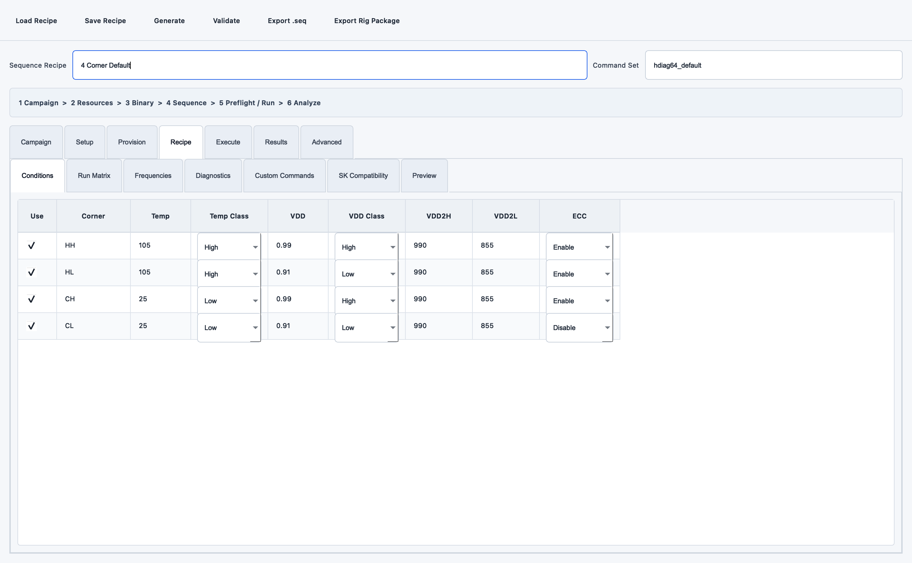
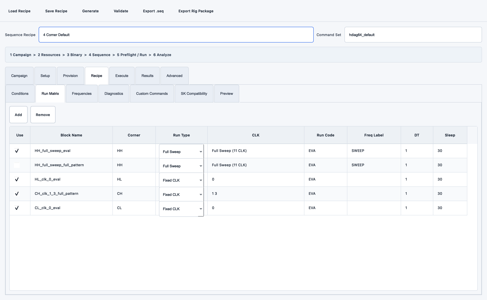
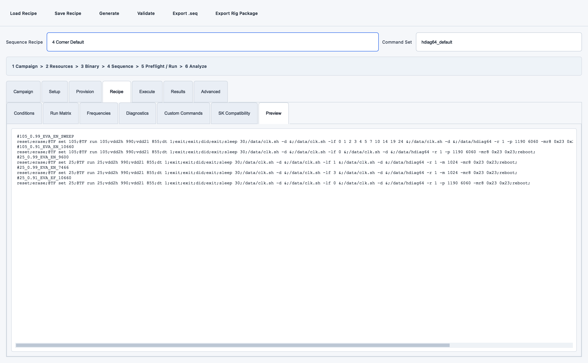

SEQ Generator와 실장기 실행 연동
Mobile DRAM AE 업무에서 PC 1대에 여러 실장기가 연결된 경우 두 실행 방식을 지원합니다.
TestSeqGenerator.exe
-> Validate
-> Export Rig Package (.rigseq.zip)
-> RigFtpCommander Master
-> FTP
-> RigFtpCommander Slave
-> 직접 COM: 최대 4 CH 병렬 serial 실행
-> SK Commander: CH/슬롯별 launcher workflow
SEQ 화면에서 확인할 세 가지
Corner 조건

Use가 켜진 행만 생성됩니다. Temp Class와 VDD Class는 단순 메모가 아니라
4-corner 누락 검사의 기준입니다. 실제 온도 실측값이 아니라 SEQ에 넣을 목표값입니다.
실행 블록

한 행이 한 Grid block입니다. Block Name, Corner, Run Type, CLK, Run Code, DT, Sleep을
확인하고 불필요한 행은 Use를 끕니다.
최종 한 줄 문법

Preview에서 각 Grid header 다음 body가 한 줄인지, 각 command가 ;로 끝나는지,
; 뒤에 공백이 없는지 확인합니다. 그 다음 상단 Validate를 눌러 compatibility 검사까지
통과한 뒤 Export Rig Package를 사용합니다.
준비물
| 파일 | 만드는 프로그램 | 용도 |
|---|---|---|
*.rigseq.zip |
Test Sequence Generator | 검증된 SEQ, Recipe, 검사 결과, SHA-256을 묶은 배포본 |
*.py workflow |
Win Automation Picker | SK Commander 방식을 선택할 때 SEQ를 불러오고 시작하는 UI 자동화 |
rig-ftp.info |
Rig FTP Commander | FTP와 Slave PC 목록, 실행표 설정 |
*.rigbinary.json |
Test Sequence Generator | 선택 XML의 SoC, 버전, 원본 폴더, 수정 시각, SHA-256 메타데이터 |
1. 실행 방식 선택
| 방식 | 필요한 설정 | 적합한 경우 |
|---|---|---|
직접 COM |
CH별 Console COM, baud | SEQ command를 serial console에 직접 보낼 수 있고 현장 prompt/timing을 검증한 장비 |
SK Commander |
CH별 launcher workflow | 사내 GUI가 SEQ Load/시작을 담당하거나 직접 serial 절차가 아직 검증되지 않은 장비 |
새 SEQ/SoC는 먼저 한 CH에서 직접 console dry-run과 원본 로그를 확보합니다. 직접 COM은
출력 가능한 ASCII command, ; 종결, ; 뒤 무공백을 검사하지만 사내 command 의미나
장비별 대기 시간을 추측하지 않습니다.
SK Commander 런처 workflow 만들기
Win Automation Picker에서 실제 업무를 한 번 녹화합니다.
연속 녹화 시작을 누릅니다.- 대상 SK Commander에서
SEQ 불러오기를 누릅니다. - 파일 선택창에서 임시 SEQ를 선택합니다.
- SK Commander에서 최종
시작버튼까지 누릅니다. - Picker로 돌아와
녹화 정지를 누릅니다. - 파일 경로를 입력하는 블록의 실제 경로를
${seq_path}로 바꿉니다. 유형 / 역할을 경로 칸sk_seq_path, Loadsk_load, Startsk_start로 지정합니다.- 같은 제목의 창이 여러 개면 창 구분 component의 marker를
${channel}로 바꿉니다. 선택 블록 시험과 전체실행으로 확인한 뒤 Python workflow를 내보냅니다.
Stop, Reset, Power Reset은 각각 sk_stop, sk_reset, sk_power_reset 역할의 별도
workflow로 만듭니다. 전체 역할과 현장 수동 실행 감시는
SK Commander 연동과 직접 COM 운용을 따릅니다.
channel=CH11인 실행 행에서는 selector의 root 이름, AutomationId, class, 창 marker에 포함된 ${channel}이 모두 CH11로 치환됩니다. 모니터 보드의 tab/channel/state 이름도 같은 변수를 사용할 수 있습니다.
CH가 없는 장비는 channel을 비워 둡니다. 대신 창 안의 다른 고유 component marker를 사용하거나 슬롯별 런처를 따로 만듭니다.
2. SEQ 패키지와 선택 런처 업로드
2 자동화 준비에서 SEQ를 검사하고, SK Commander 방식이면 Scratch 런처도 준비합니다.준비 상태 확인후서버 라이브러리 등록을 누릅니다.- 목록에서
[FLOW]와[SEQ]로 구별되는지 확인합니다. - SEQ 상세 정보에서 Recipe, Command Set, corner, block/command 수를 확인합니다.
Field Verified: False는 패키지 오류가 아니라 실제 장비 성공 자료와 아직 대조되지 않았다는 의미입니다. Grid 한 줄 문법과 설정된 SK compatibility profile 검사는 통과했지만 실제 prompt/timing/protocol 호환성을 보증하지 않습니다.
AE Campaign이 포함된 패키지는 Campaign ID, owner, objective, hypothesis, acceptance, stop condition, repeat와 preflight 상태도 표시합니다. snapshot hash 또는 preflight가 맞지 않으면 업로드 및 Slave 실행이 거부됩니다.
3. 한 PC에 4개 실장기 배정
3 Rig 설정 > Master · 원격 PC > 실장기 연결 PC에서 PC를 선택하고실장기 관리를 누릅니다.- CH9, CH10, CH11, CH12와 Slot, SoC, 자재를 등록합니다.
- 각 CH의 Console COM과 baud를 반드시 확인합니다.
- 필요하면 Seq Generator의
.rigbinary.json을 선택 CH에 불러옵니다. [SEQ]패키지를 선택하고 상단SEQ 방식을 고릅니다.직접 COM이면 바로Rig 대상 불러오기를 누릅니다.SK Commander이면운영 도구 열기에서[FLOW]런처를 고른 뒤 대상을 불러옵니다.- 등록된 네 CH가 네 행으로 생겼는지 확인하고 SEQ 방식/COM/입력값을 조정합니다.
Campaign repeat가 2라면 CH마다 attempt 1과 2가 만들어져 네 CH 기준 8행이 됩니다. 전체 상태는 AE 캠페인 운영 보드에서 확인합니다.
예:
| 실행 | PC / Node | SEQ / 매크로 | CH | 슬롯 | SEQ 방식 | COM | Baud |
|---|---|---|---|---|---|---|---|
| 체크 | rig-pc-04 | four-corner.rigseq.zip | CH9 | S1 | 직접 COM | COM11 | 115200 |
| 체크 | rig-pc-04 | four-corner.rigseq.zip | CH10 | S2 | 직접 COM | COM12 | 115200 |
| 체크 | rig-pc-04 | row-hammer.rigseq.zip | CH11 | S3 | SK Commander | COM13 | 115200 |
| 체크 | rig-pc-04 | aging.rigseq.zip | CH12 | S4 | SK Commander | COM14 | 115200 |
같은 Node ID를 여러 행에 사용하는 것이 정상입니다. 같은 Campaign/attempt의 직접 COM 행은 최대 네 개가 한 batch job이 되어 동시에 실행됩니다. attempt가 다르면 다음 batch로 분리됩니다.
실행표에는 CH뿐 아니라 soc_vendor, soc_model, binary_name, binary_version, binary_source_path, binary_updated_at, dram_part, lot_id, sample_id, test_name, sequence_name이 함께 전달됩니다. Slave heartbeat의 같은 CH 행이 이 값과 실행 상태를 유지합니다.
한 PC의 SK Commander UI job은 포커스 충돌을 막기 위해 순서대로 처리됩니다. 런처 workflow는
SEQ 불러오기 > 시작까지만 수행하고 종료하는 구성이 적합합니다. 네 SK Commander가 테스트를
시작한 뒤의 장시간 상태 추적은 클릭/입력이 없는 별도 monitor workflow로 수행합니다.
4. Slave에서 일어나는 일
Slave는 job을 받으면 다음 순서로 처리합니다.
- ZIP 크기와 고정 member를 확인합니다.
sequence.seq와recipe.hseq.json의 SHA-256을 확인합니다.- 생성기 validation이
ok=true인지 확인합니다. 직접 COM이면;문법, 고유 COM과 최대 4 CH 제한을 확인합니다.SK Commander이면작업 폴더/sequences/{bundle_id}/sequence.seq에 저장합니다.- 선택 방식에 따라 serial batch 또는 런처 workflow를 실행합니다.
직접 COM 결과
- 각 CH는 독립 serial session과 thread를 사용합니다.
- 한 CH의 command 오류는 그 CH를 FAIL 처리하지만 다른 CH의 결과 확정은 계속합니다.
- Grid, command, timeout, response와 Temp/VDD 조건을 CH별 manifest에 기록합니다.
work_dir/serial-results/{job-CH}/grids/*.log와console.log를 저장합니다.- 완료 시 manifest/Grid/console을 용량 제한 ZIP으로 한 번만 FTP에 올립니다.
- Master 결과 행의
선택 결과 증거 ZIP 저장으로 내려받습니다. - Master 긴급 중단은 batch job ID로 네 CH에 전달되어 다음 stop 확인 시 멈춥니다.
SK Commander 런처 변수
| 변수 | 값 |
|---|---|
${seq_path} |
Slave에 저장된 SEQ의 절대 경로 |
${channel} |
실행표의 CH 값 |
${slot_id} |
실행표의 슬롯 값 |
${seq_recipe} |
패키지 Recipe 이름 |
${seq_command_set} |
Command Set ID |
${campaign_id} |
패키지의 변경 불가능한 Campaign ID |
${campaign_title} |
Campaign 제목 |
${campaign_attempt} |
현재 실행표의 반복 번호 |
${campaign_repeat_count} |
계획된 전체 반복 수 |
직접 COM은 성공한 Grid 수와 PASS/FAIL을 결과 및 heartbeat에 직접 반영합니다. SK Commander
런처가 시작 버튼을 누른 직후에는 상태가 running, 완료 수는 0이며 실제 3/12,
PASS/FAIL은 별도 monitor workflow가 화면 component에서 읽어 heartbeat에 반영해야 합니다.
ZIP을 extractall하지 않으므로 패키지 안의 임의 경로가 Slave의 다른 폴더를 덮어쓰지
않습니다. 같은 bundle은 같은 SHA 기반 폴더를 재사용하고, Rig가 만든 정상 형태의 폴더만
최근 50개까지 유지합니다. 직접 serial 결과도 전용 폴더에서 로그 보관 개수만큼 유지하며
이름이나 내부 파일이 다른 사용자 폴더는 정리하지 않습니다.
5. 모니터링과 중단
- 런처 workflow 마지막에 상태 monitor 블록을 넣으면 실행 결과 JSON에 함께 저장됩니다.
- 별도 monitor-only workflow를 주기 실행하면 클릭/입력 없이 상태만 읽습니다.
- Master의
긴급 중단은 실행 중 workflow 또는 직접 serial batch가 다음 stop 확인 시점에 중단되도록 요청합니다. - 화면이 꼭 필요할 때만
전체 화면 보기를 눌러 최신 캡처를 요청합니다.
직접 COM 엔진이 구현되어 있어도 새로운 SoC/SEQ가 현장 검증된 것은 아닙니다. 실제 성공 SEQ, raw serial log, prompt/timing/error marker를 한 CH에서 확보한 뒤 직접 방식을 확대합니다. 증거가 없거나 사내 GUI가 필수인 장비는 SK Commander 방식을 유지합니다.